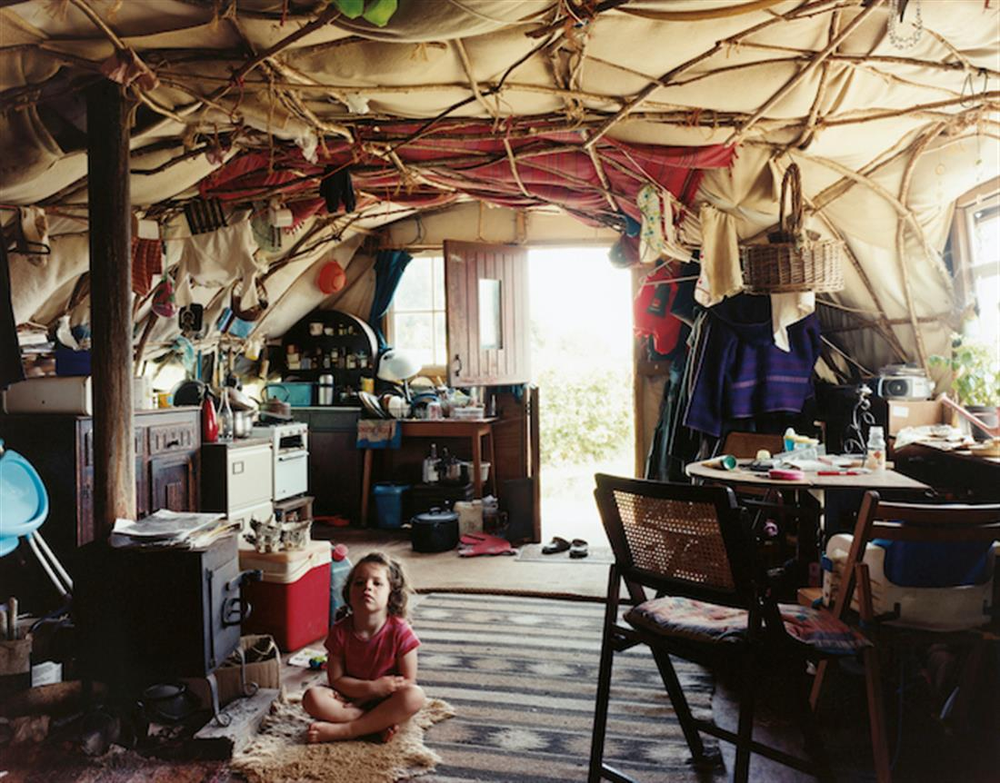

Above image by David Spero:
Above image by David Spero:
‘The Longhouse’ communal space and workshop (view from old kitchen path), Steward Community Woodland, Devon, June 2004
Canvas-covered structure, part hazel pole bender and part roundwood timber frame, with reused materials. Initial construction 2000
David Spero: Settlements
20 July - 8 September 2019
David Spero has developed a number of highly distinctive bodies of work that distil various photographic traditions and approaches, from documentary to photo-sculpture, forming a rich and multi-faceted practice which overall maintains a quiet and contemplative enquiry. (David Chandler)
Settlements is a photographic record of self-built homes and structures in a small number of low impact land-based communities in Britain that explores ecologically sustainable ways of living.
Taken between 2004-2018, the images chart a period in the evolution of these communities through their homes, communal spaces, infrastructure, growing areas and a number of community portraits, taken at intervals. The photographs centre around four settlements: Steward Community Woodland, Brithdir Mawr, Tinkers Bubble and Landmatters.
Settlements was self published as a book in February 2017. It was first exhibited at the Photographers Gallery London in 2006 and was later included in How we are: Photographing Britain at Tate Britain in 2007. Spero published his first book Churches with SteidlMACK in 2007, a photographic survey of evangelical churches in the London area, housed in buildings never intended for worship. The series was exhibited at The National Media Museum Bradford in 2011. His work also includes Ball Photographs, in which rubber balls are placed into existing spaces, creating subtle forms which disrupt and transform the process of viewing and more recently Balls, Wood and Audiotape. Spero was the inaugural PhotoWorks Fellow at The British School at Rome in 2009. His work is in various collections including the British Council, The National Media Museum and the Victoria and Albert Museum.
The Public Opening of David Spero: Settlements (20 July – 8 September) on Saturday 20 July from 2pm – 5pm, will coincide with Paul Chaney’s launch of his Pavilion re-build in the orchard and the Planning Matters programme associated with his work as Associate Artist at Kestle Barton. Planning Matters, led by Paul Chaney, will bring together leading experts in the field of low impact development to explore the socio-political conditions restricting access to land that led to the formation of such communities and try to establish how current planning law could be affecting the UK’s ability to achieve sustainability targets.
These events are supported by the National Lottery through Arts Council England.
David Spero
David Spero graduated from the Royal College of Art in 1993 and lives and works in London. He has exhibited widely and his work has been included in shows at Tate Britain and The Photographers’ Gallery, London. In 2007 he published his monograph Churches with SeidlMack. He was the recipient of an Arts Council International fellowship in Oulu, Finland and was the inaugural PhotoWorks fellow at The British School at Rome in 2009.

Image by David Spero:
Josh, Selena and Sasha’s, Landmatters, Devon, May 2008
Canvas-covered hazel pole bender. Constructed 2005
SOURCE: KESTLE BARTON